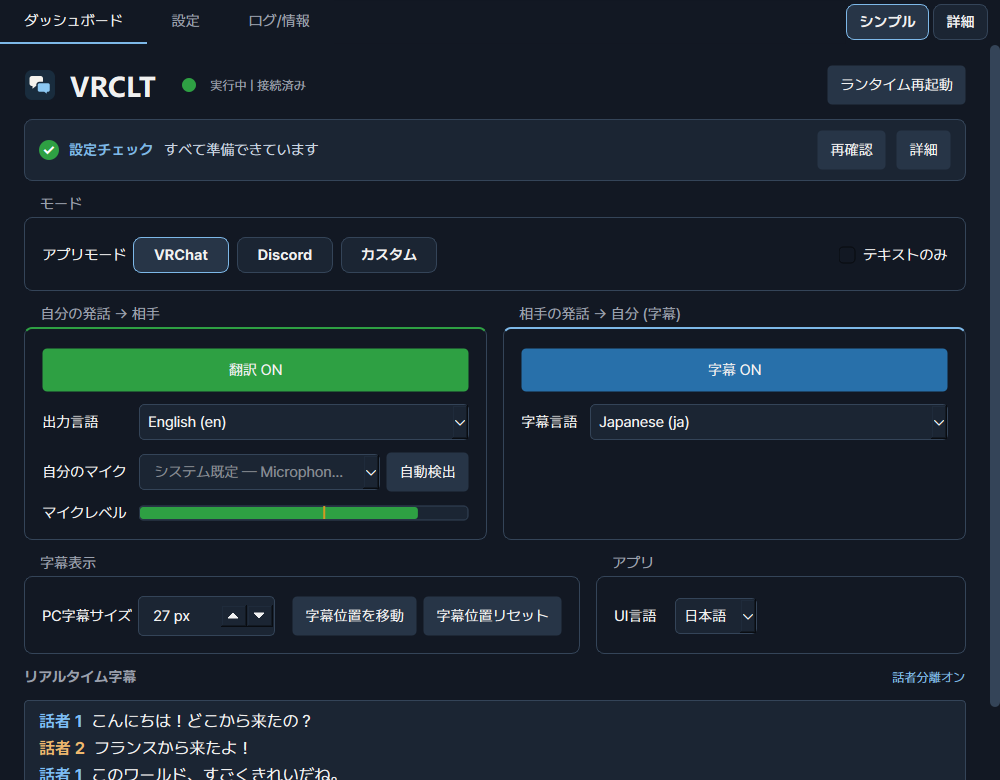
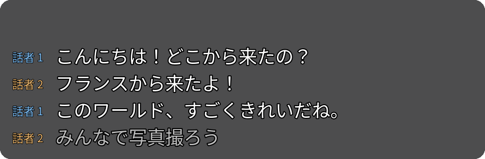
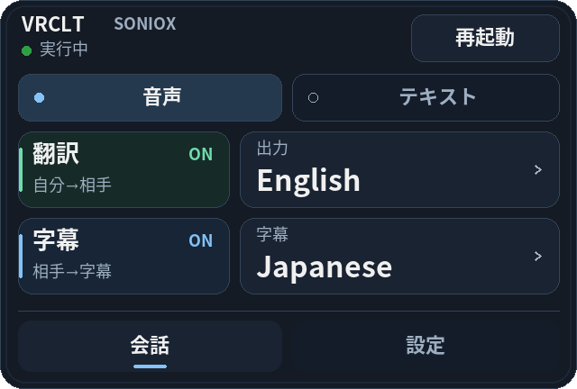
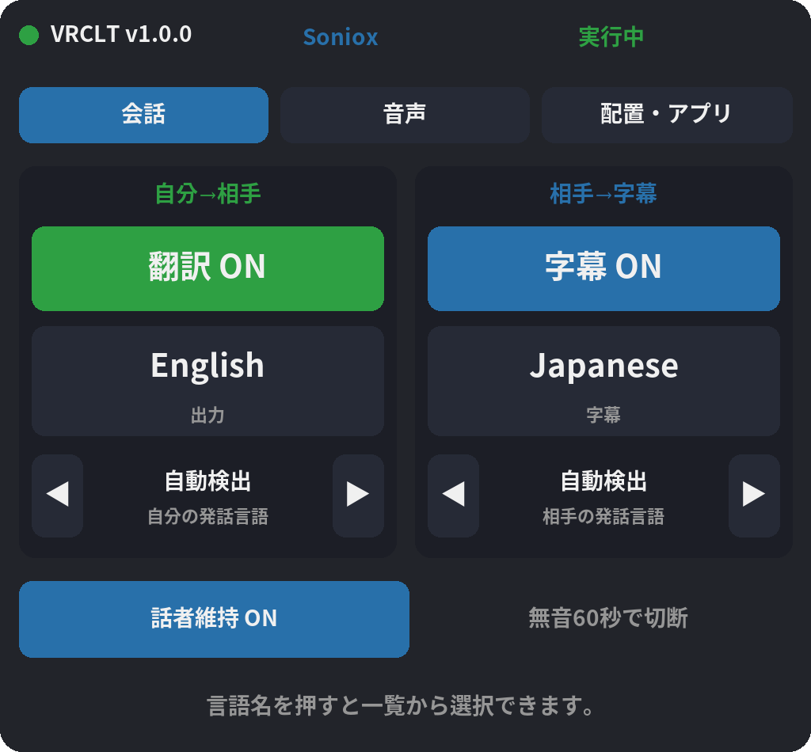

話した内容を別の言語に翻訳します。
マイクで話すと、翻訳された音声がVRChatやDiscordに届きます。相手に聞こえる言語を選べます。
VRCLTは、自分の音声を翻訳してVRChatやDiscordに送り、相手の話を翻訳字幕で表示するWindowsアプリです。
Windows · 自分のAPIキー · 音声出力用VB-Cable

マイクで話すと、翻訳された音声がVRChatやDiscordに届きます。相手に聞こえる言語を選べます。
相手の話を、選んだ言語の字幕で読めます。アプリ、デスクトップ、SteamVR内に表示できます。
手首メニューで言語を切り替え、SteamVRダッシュボードで設定を調整。VRChatのチャットボックスにも翻訳を送れます。



v1.0の実際のアプリに会話例を入れて描画した画面です。ヘッドセットでの動作を撮影したものではありません。
GitHub ReleasesからWindows実行ファイルをダウンロードして起動します。配布版にPythonのインストールは不要です。
ダウンロードへ翻訳エンジンを選び、提供元でAPIキーを取得して設定画面に入力します。サービスの利用料金は別途かかります。
翻訳エンジンを見るVB-Cableをインストールします。翻訳音声の出力先をCABLE Input、対象アプリのマイクをCABLE Outputに設定します。
VB-CableアプリはMITライセンスのオープンソースです。翻訳には自分のAPIキーを使用し、提供元によって利用料金が発生します。開始前に料金と残高を確認してください。
いいえ。Windows PCだけで音声翻訳とデスクトップ字幕を利用できます。VR字幕や手首メニューにはSteamVRが必要です。
音声は選択した翻訳サービスに送信されます。APIキーとアプリの設定はPCに保存されます。利用前に提供元のデータ取り扱い方針を確認してください。